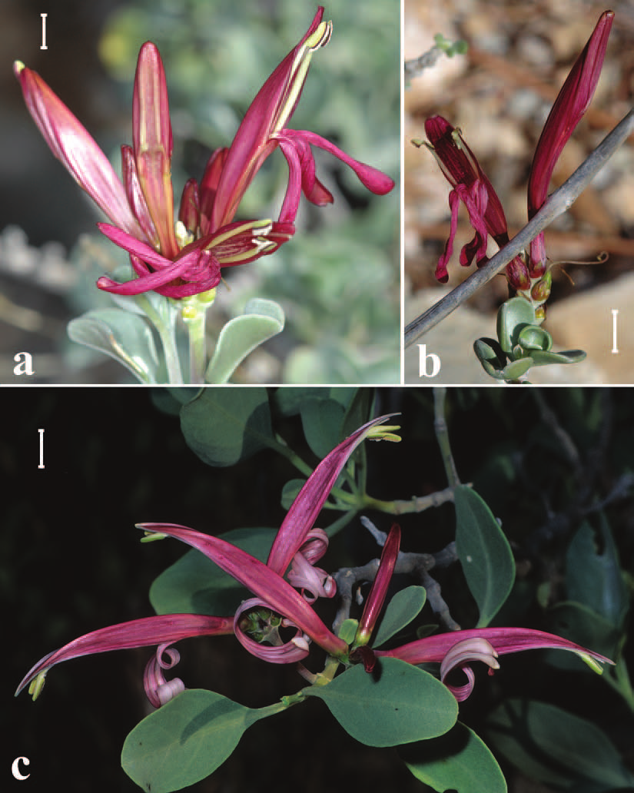
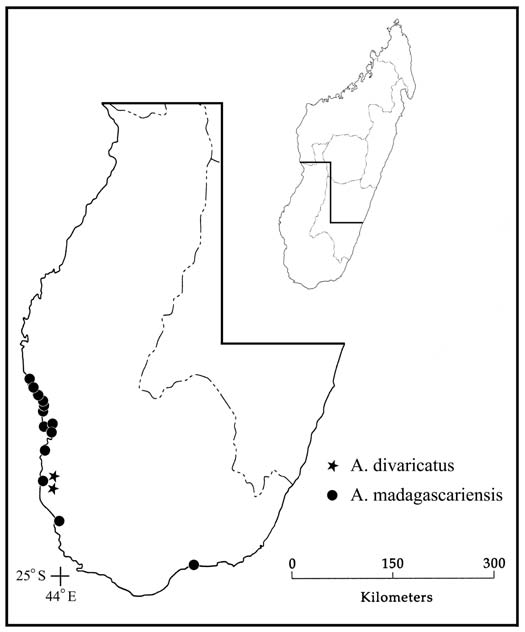

Proceedings of The California Academy of Sciences 11 May 2007 58(8): 121-131
Anisotes (Acanthaceae) in Madagascar
Daniel, Thomas F, Mbola, Balzac A V, Almeda, Frank, Phillipson, Peter B
Abstract
Two species of Anisotes (Acanthaceae: Justicieae) are recognized from Madagascar. Anisotes madagascariensis is endemic to sandy, coastal regions of southern Madagascar. New morphological, distributional, and ecological data are presented for this species. A newly described species, A. divaricatus, is known only from calcareous, rocky substrates near Lake Tsimanampetsotsa in southwestern Madagascar. Major morphological distinctions between A. divaricatus and A. madagascariensis include: habit (divaricate branches vs. ascendant branches); length (5–11 vs. 14–45 mm long) and shape (obcordate to obdeltate vs. broadly ovate to elliptic) of leaf blades; corolla form (corolla tube:corolla 0.46–0.56 vs. 0.23–0.38; lower lip not spirally coiled vs. spirally coiled); and capsule pubescence (lacking trichomes vs. trichomes present). Images of flowers and pollen, morphological descriptions, and mapped distributions are provided for both species.Full text
Full text is available as a scanned copy of the original print version. Get a printable copy (PDF file) of the complete article, or click on a page image below to browse page by page. Links are also available for Selected References.
Images in this article

